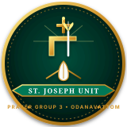

Parish Prayer Groups
Message from the Prayer Groups President
Renewing the domestic Church through intimate neighborhood prayer and spiritual solidarity
Our 3 Prayer Groups
Neighborhood family units organized under the patronage of holy saints
1. St. Thomas Prayer Group
Named after our apostolic patron Apostle St. Thomas. Comprising central church families and northern parish settlements.
2. St. Mary's Prayer Group
Under the loving maternal mantle of the Blessed Virgin Mary. Uniting families in the eastern and valley neighborhoods of Odanavattom.

3. St. Joseph Prayer Group
Dedicated to St. Joseph, the Guardian of the Holy Family. Serving western and southern parish wards with devout weekly intercession.
Executive Committee & Unit Animators
Dedicated leaders coordinating rotating prayer schedules and parish home visitations
Sri. V. C. Mathai
Smt. Rachel Thomas
Sri. Joy Varghese
Sri. George Mathew
Sri. Georgekutty Joseph
Smt. Sosamma Mathew
Sri. Babu K. John
Sri. Philip Varghese
Activities & Photo Gallery
Moments from family home prayer sessions, Bible reflections, harvest gatherings, and sick visits
 Home Prayer
Home Prayer
Monthly Family Prayer
Parish families gathering in rotation for Rosary, Bible reading, reflection, and light fellowship.
 Parish Feast
Parish Feast
Patronal Feast Rallies
Each prayer group presenting traditional offerings and cultural presentations during the feast.
 Liturgy
Liturgy
Group Liturgy Day
Monthly dedicated Sunday Qurbono animated by each prayer group with special prayers for its families.
 Harvest Agape
Harvest Agape
Parish Harvest Agape
Prayer groups uniting in friendly harvest auction sales, cultural performances, and family day fellowship.